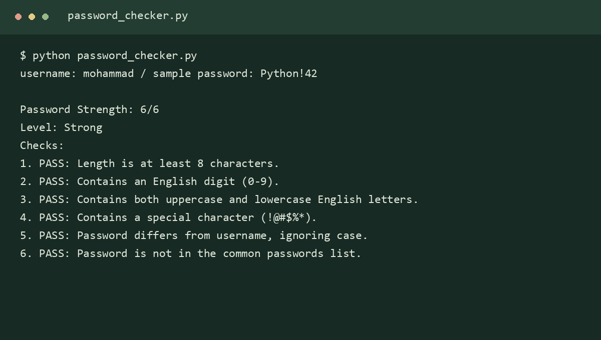

تمرین 01
بررسی قدرت رمز عبور
برنامه نام کاربری و رمز را میگیرد و با شش معیار، قدرت رمز را بررسی میکند. نتیجهٔ هر بررسی همراه امتیاز نهایی نمایش داده میشود.
اینجا روی شرطها، حلقهها و پیمایش کاراکترهای یک رشته تمرین کردم.
مشاهدهٔ کد در گیتهاب